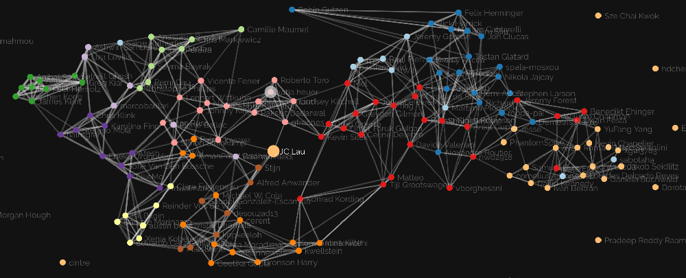

BrainWeb Gazette, Number 1, May 2020
It’s a Small World
Comment
BrainWeb: From lonely dots to a colorful point cloud
BrainWeb
The BrainWeb started last April, and we were just a few lonely dots across the screen. Within days, our graph was exploding with nodes and edges! Have you checked the community page recently?
It was a fantastic start into a very dynamic 3 days of hacking and meeting across 29 countries from almost all continents. More than 100 people joined us during the live kickoff, and added 23 projects to the BrainWeb, many of which have seen very dynamic interactions on Mattermost and GitHub. In the past 6 weeks, the community has grown to more than 200 members in the BrainWeb, and more than 500 followers of our Twitter account @TheBrainWeb.
The BrainWeb Gazette
The BrainWeb Gazette will bring short news to you every once in a while to keep us all connected. We would like to get to know the entire community. We invite you to team up and write about the projects you care about, especially if it is not your own project! This could be a good opportunity to learn about those projects, quickly catch up with the project leads, and present their project in the BrainWeb Gazette. With this, we hope to bring different perspectives together, gain insights on all the interesting projects, and get closer as a community. We are looking forward to more and more people enjoying BrainWeb as a platform to find collaborators, and as a stage to communicate their recent work in the BrainWeb Gazette and on the BrainWeb Twitterverse.
If you'd like to write the next BrainWeb Gazette Letter, open an issue on our GitHub repository to let us know, find a writing pal, and the stage will be yours.
Next BrainWeb Coffee & Catchup
Join us this Friday, 22 of May, 5pm UTC, for our next community call. You can present updates on your project, brainstorm new ideas, or just share a moment with us.
Project Spotlight
|
BrainSpace https://brainspace.readthedocs.io |

|
brainspace |
3 Stars Python Matlab 5 Issues
BrainSpace
Sofie Van Den Bossche & Austin Benn
All about BrainSpace
Macroscale cortical gradients have taken the functional neuroimaging community by storm, but until recently implementing them into an exisitng analysis workflow has required a tailor made approach. Thanks to the recent development of Brainspace, the team led by Reinder Vos de Wael created a software package available in both Matlab and Python which eases the technical aspects and provides statistical significance testing of macroscale cortical gradients in surface and volume space. You can learn more about the BrainSpace toolbox in their recent (open access) article.
BrainSpace & BrainWeb
During and since the the BrainWeb kickoff meeting the BrainSpace team has worked on adding volumetric gradient visualization to the toolbox. Working simultaneously in both Matlab and Python, they constructed a MATLAB viewer that projects gradients to 3D volume space and visualizes it over an anatomical image. Using the breadth of packages available in the Python eco-system, they further added metadata storage and interactive HTML output to the Python viewer.
Future Work for BrainSpace
Future work for BrainSpace includes creating a Volume Viewer that would have: volume scrolling, colormap customization, transparency adjustments, and volume rotations. If you are interested in helping, join the BrainSpace team at their Mattermost channel.
References
Vos de Wael, R., Benkarim, O., Paquola, C., Lariviere, S., Royer, J., Tavakol, S., Xu, T., Hong, S.-J., Langs, G., Valk, S., Misic, B., Milham, M., Margulies, D., Smallwood, J., & Bernhardt, B. C. (2020). BrainSpace: a toolbox for the analysis of macroscale gradients in neuroimaging and connectomics datasets. Communications Biology, 3(1). https://doi.org/10.1038/s42003-020-0794-7